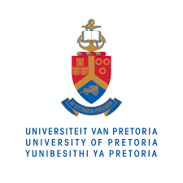
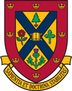
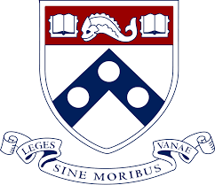
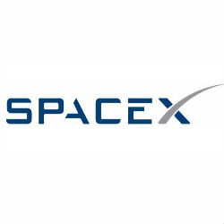

Elon musk CV

1989 17 vuoden ikänen musk liittyi Pretoria universitiin
Queens university vuonna 1990
University of Pennsylvenia
Vuonna 1997 elon valmistui luonnontieteen kanndetettina
Vuona 1998 Elon rakensi Paypalin ja myi sen 1999 yhtyeelle kuin Compaq 307 miljoonaan dollariin

Vuonna 2002 Elon perusti SpaceX nimiseen yhtyeen

Vuonna 2003 Elon alkoi investoida Tesla mootoreihin ja vuonna 2008 Elonista tuli CEO